How To Read
This page replaces the dense CV2 wall with readable figure-by-figure sections.
읽는 순서. 먼저 Manuscript Blueprint와 Analysis Control Board로 논문 범위를 고정하고, Evidence figures에서 실제 public-data 근거를 본 뒤, Defense figures에서 심사위원 방어 문장을 확인한다.
Now
public-data prior/framework paper
Not now
postoperative CTC transition discovery
Unlock
Yu/hospital serial CTC + matched NGS
Rule
every result has a boundary
Manuscript Boards
Start here. These boards decide what the paper is, what it is not, and what to do next.
PF11
Manuscript Blueprint Board

Data usedmanuscript_blueprint.tsv; submission_strategy_matrix.tsv; current evidence and claim-boundary outputs.
How to read왼쪽은 논문 identity/title/thesis/boundary, 오른쪽은 Results 1-6 writing blocks다.
Results scaffoldWe finalized the manuscript as a public-data prior/framework paper rather than a discovery paper. The writeable Results sequence is mutation/state heterogeneity, spatial tissue-state organization, marker-context rationale, marker support grading, phenotype-to-genotype anchoring, and integrated dataset-gap definition.
Methods / provenanceInput tables: manuscript_blueprint.tsv and submission_strategy_matrix.tsv.
Paper use웹 첫 검토, 교수님 회의, writing control sheet.
Claim boundaryblueprint는 manuscript planning tool이지 새 biological result가 아니다.
Reviewer-safe sentenceThis board is a scope-control device: it prevents the manuscript from drifting into unsupported CTC transition or recurrence-prediction claims.
PF09
Claim-Evidence Scorecard
{kind=link}
Data usedmanuscript_claim_evidence_scorecard.tsv; TCGA/spatial/scRNA/proteomics/gap/claim-boundary outputs.
How to read각 줄은 논문 결과 블록 하나다. 가운데는 쓸 수 있는 claim, 오른쪽은 support figure와 왜 아직 strong discovery가 아닌지를 보여준다.
Results scaffoldThe current evidence package yields six writeable in silico result blocks: mutation/state heterogeneity, spatial tissue-state organization, marker-module rationale, phenotype-to-genotype anchoring, integrated dataset gap definition, and publishability scope.
Methods / provenanceInput table: manuscript_claim_evidence_scorecard.tsv.
Paper useResults section planning, internal go/no-go, professor briefing.
Claim boundaryclaim strength가 Moderate인 항목을 discovery claim처럼 쓰지 않는다.
Reviewer-safe sentenceThis scorecard prevents moderate public-data evidence from being overstated as prospective CTC discovery.
PF14
Analysis Control Board
{kind=link}
Data usedkey_number_ledger.tsv; statistical_analysis_plan.tsv; stage_gate_kill_criteria.tsv.
How to read왼쪽은 본문에 쓸 key numbers, 가운데는 현재/미래 분석계획, 오른쪽은 실패 시 downgrade/kill rule이다.
Results scaffoldWe created a final analysis-control layer that records key numbers, current versus future statistical questions, and stage-gate criteria. This converts the dossier from a figure collection into a controlled manuscript-preparation system.
Methods / provenanceInput tables: key_number_ledger.tsv, statistical_analysis_plan.tsv, stage_gate_kill_criteria.tsv.
Paper useMethods planning, reviewer defense, final fact-check.
Claim boundaryfuture prospective analysis rows는 현재 Results가 아니라 planned validation이다.
Reviewer-safe sentenceThe analysis control board makes clear which analyses were performed now and which require future serial hospital data.
PF13
Execution Board
{kind=link}
Data usedmain_supp_figure_layout.tsv; reviewer_risk_heatmap.tsv; next_72h_manuscript_execution.tsv.
How to read왼쪽은 main figure 순서, 오른쪽 위는 risk severity, 오른쪽 아래는 다음 72시간 작업이다.
Results scaffoldWe converted the in silico dossier into an execution-ready package, defining main and supplementary figures, methods reproducibility checks, reviewer risks, safe sentences, hospital CRF requests, and a 72-hour action plan.
Methods / provenanceInput tables: main_supp_figure_layout.tsv, reviewer_risk_heatmap.tsv, next_72h_manuscript_execution.tsv.
Paper use실행 회의, 교수님 보고, 다음 작업 분배.
Claim boundaryexecution board는 manuscript management 도구이지 biological result가 아니다.
Reviewer-safe sentenceExecution planning is separated from biological evidence to keep manuscript operations from becoming unsupported claims.
PF12
Future Data Unlock Map

Data usedfuture_data_unlock_map.tsv; current missing-dataset logic; Samsung prospective study design.
How to read왼쪽은 필요한 hospital/Yu data, 가운데는 통합 discovery dataset, 오른쪽은 그 데이터가 unlock하는 future figures다.
Results scaffoldWe explicitly mapped the data elements required for the next-stage discovery manuscript. Serial CTC phenotype data would unlock transition plots, matched tissue-normal NGS would unlock clone anchoring, cfDNA would unlock molecular persistence kinetics, and postoperative follow-up would unlock risk-association analyses.
Methods / provenanceInput table: future_data_unlock_map.tsv.
Paper useDiscussion future work, professor data request, Samsung execution plan.
Claim boundaryfuture unlock claim을 현재 Results로 끌어오지 않는다.
Reviewer-safe sentenceFuture data requirements are shown to prevent unsupported future claims from being imported into the current public-data manuscript.
Evidence Figures
These are the public-data in silico results that can support the current paper.
F03
BRAF-mutant PTC is not one state

Data usedTCGA-THCA BRAF-mutant subset; tcga_braf_only_label_distribution.tsv.
How to readBRAF-mutant tumors가 여러 vulnerability/tissue-state label로 분산된다. largest label이 약 33.2%라 나머지 66.8%는 다른 state다.
Results scaffoldAmong BRAF-mutant PTC tumors, mutation status did not collapse tumors into a single state. The largest state represented only 33.2% of the BRAF-mutant subset, leaving substantial state heterogeneity within the same driver-defined group.
Methods / provenanceInput table: tcga_braf_only_label_distribution.tsv generated from the public pilot extra analyses.
Paper useResults 2: mutation alone is insufficient.
Claim boundaryBRAF split은 CTC transition이나 recurrence를 증명하지 않는다.
Reviewer-safe sentenceThis figure does not claim CTC biology; it justifies why tissue genotype must be interpreted together with state markers.
F04
Driver variance boundary

Data usedtcga_axis_variance_models.tsv.
How to readdriver grouping이 일부 정보를 주지만 axis variation을 완전히 설명하지 못한다. mutation-only interpretation의 한계를 읽는다.
Results scaffoldDriver-only models captured only a fraction of tissue-state variation. These residual state axes motivate the combined CTC-EMT phenotype and matched NGS design, where mutation identifies clone origin and phenotype captures transition state.
Methods / provenanceInput table: tcga_axis_variance_models.tsv. Models are descriptive and not causal.
Paper useResults 2 보조 figure 또는 Supplement.
Claim boundarydescriptive variance model이며 causality claim이 아니다.
Reviewer-safe sentenceThe driver analysis is a boundary argument: mutation helps, but it is not enough for the state-transition question.
F05
Spatial tissue states are organized

Data usedGSE250521 spatial transcriptomics; spatial_coherence_statistics.tsv; 16 slides, 57,144 spots.
How to readsame-niche coherence z-score가 16/16 slides에서 2를 넘는다. tissue-state label이 주변 spot과 함께 모이는 경향을 뜻한다.
Results scaffoldPublic spatial data showed that tissue-state labels are spatially structured rather than random spot-level noise. This provides tissue-context support for the marker-prior framework that will later be tested in serial blood.
Methods / provenanceInput table: spatial_coherence_statistics.tsv; source figure: spatial_coherence_summary.png.
Paper useResults 3: tissue context supports marker/ROI logic.
Claim boundary이 그림은 CTC origin proof가 아니다.
Reviewer-safe sentenceSpatial coherence is used as tissue-context evidence only, not as evidence of CTC shedding.
F06
Single-cell marker context

Data usedscrna_module_celltype_attribution.tsv.
How to read각 module이 어느 cell type/context에서 상대적으로 강한지 본다. marker 선택의 biological plausibility를 설명한다.
Results scaffoldWe used single-cell marker attribution to organize candidate CTC modules into epithelial, hybrid/mesenchymal, thyroid-lineage, and survival/stress compartments. This creates a structured marker prior for the prospective assay.
Methods / provenanceInput table: scrna_module_celltype_attribution.tsv; source figure: scrna_module_celltype_attribution_heatmap.png.
Paper useResults 4: marker modules have cell context.
Claim boundarysingle-cell tissue context는 circulating CTC validation이 아니다.
Reviewer-safe sentenceThe scRNA layer supports marker selection, not direct circulating-cell validation.
F07
Proteomics dedifferentiation direction

Data usedbulk_proteomics_kthyro_module_contrasts.tsv; bulk_proteomics_kthyro_dediff_trends.tsv.
How to readdedifferentiation 방향에서 RAI/thyroid-lineage protein loss와 myeloid/TGFB/stress gain을 확인한다.
Results scaffoldOrthogonal proteomic summaries were consistent with the direction of dedifferentiation-prior modules. This supports including thyroid-lineage loss and survival/stress gain in the CTC-EMT panel design.
Methods / provenanceInput tables: bulk_proteomics_kthyro_module_contrasts.tsv and bulk_proteomics_kthyro_dediff_trends.tsv.
Paper useResults 4 supplement or orthogonal support.
Claim boundarybulk proteomics를 spatial proteomics나 CTC proteomics처럼 말하지 않는다.
Reviewer-safe sentenceThe proteomics layer strengthens biological plausibility but does not substitute for serial blood evidence.
PF10
Marker module cross-layer support

Data usedmarker_module_cross_layer_support_matrix.tsv; TCGA, spatial, scRNA, proteomics, Yu 2024 support coding.
How to read0은 현재 지지 없음, 1은 간접/context support, 2는 prior construction에 직접 유용한 support다. validation metric이 아니라 manuscript-planning score다.
Results scaffoldWe next converted the marker panel into a cross-layer support matrix. This showed that thyroid-lineage markers have the broadest public support, while EMT and survival/stress modules should be treated as hypotheses requiring serial blood validation and matched genetic anchoring.
Methods / provenanceInput table: marker_module_cross_layer_support_matrix.tsv. Scores are qualitative planning scores: 0=no current support, 1=indirect/context support, 2=directly useful for prior construction.
Paper useResults 4-5 사이. marker panel이 임의적이지 않다는 보강 figure.
Claim boundarysupport score를 assay validation score처럼 말하지 않는다.
Reviewer-safe sentenceThe matrix ranks marker-prior support; it is not a validated assay-performance matrix.
PF03
Marker-to-NGS map

Data usedCTC-EMT marker prior table, thyroid-lineage markers, thyroid cancer driver/private variant logic.
How to readEpithelial/hybrid/mesenchymal/thyroid-lineage/survival modules가 CTC fraction state로 모이고, 오른쪽 tumor-informed NGS가 clone identity를 확인한다.
Results scaffoldWe therefore defined the CTC-EMT panel as a two-layer system: phenotype first, genetic anchoring second. This prevents overinterpretation of nonspecific postoperative blood cells as tumor-derived residual-risk biology.
Methods / provenanceInput sources: ctc_emt_marker_prior_table.tsv, specific aims, Samsung NGS map schematic.
Paper useResults 5 또는 prospective study design의 핵심 schematic.
Claim boundarymarker co-expression을 viable metastasis나 recurrence predictor로 말하지 않는다.
Reviewer-safe sentenceMatched NGS is the guardrail against overcalling CTC phenotype as tumor-derived biology.
F08
CTC-EMT-NGS prior panel

Data usedmarker prior table, public tissue-state support, thyroid cancer driver logic.
How to readE, E/M, M, thyroid identity, survival/stress, genetic anchor가 별도 module로 정의된다.
Results scaffoldThe final prior panel integrates tissue-state evidence and thyroid-cancer genetic context into a candidate serial blood assay. The central readout is not CTC count alone, but the relationship among CTC state, thyroid-lineage signal, and tumor-informed genetic persistence.
Methods / provenanceInput table: ctc_emt_marker_prior_table.tsv.
Paper useResults 5 and Samsung Aim 1-2 bridge.
Claim boundarypanel은 research-grade prior이며 clinical assay lock이 아니다.
Reviewer-safe sentenceThis panel is a hypothesis-testing framework, not a validated commercial test.
Reviewer Defense Figures
These figures keep the proposal/paper honest under Samsung-style review.
PF02
Data provenance map

Data usedTCGA-THCA, GSE250521 spatial, PTC scRNA, K-THYRO proteomics proxy, Yu 2024, future cohort, vendor workflow.
How to read각 박스의 첫 줄은 데이터 레이어, 둘째 줄은 사용 목적, 마지막 limit 문장은 금지 claim이다.
Results scaffoldWe organized all evidence sources into explicit functional categories. No public dataset is treated as a surrogate for serial CTC measurement. Instead, each public layer contributes a defined prior that informs the design of a future liquid-biopsy perturbation experiment.
Methods / provenanceDataset roles were assigned from locally generated pilot outputs and proposal reports. The map is intentionally conservative and includes each layer's non-supported claim.
Paper useMethods/Data overview와 Reviewer defense에 사용.
Claim boundarypublic pilot이 CTC shedding을 증명한다는 문장은 금지.
Reviewer-safe sentenceThe public pilot is not being used as CTC proof; it is being used to define a rational marker and genotype interpretation framework.
PF04
Missing dataset bridge

Data usedserial CTC-NGS dataset gap map, public dataset inventory, Samsung study design.
How to read위의 다섯 구성요소가 public dataset에서 동시에 빠져 있다. 아래는 public data가 할 수 있는 일과 prospective cohort가 해야 할 일을 나눈다.
Results scaffoldThe public-data analysis identifies the exact dataset that must be generated next. The missing elements are serial blood, CTC EMT subtyping, tissue-normal clone anchoring, postoperative cfDNA or CTC-enriched sequencing, and longitudinal clinical follow-up.
Methods / provenanceInput table: serial_ctc_ngs_dataset_gap_map.tsv and proposal study design.
Paper useDiscussion 또는 proposal justification.
Claim boundarypublic data만으로 postoperative outcome association을 주장하지 않는다.
Reviewer-safe sentenceThe proposal is necessary precisely because the integrated dataset does not exist.
PF05
Claim boundary matrix
{kind=link}
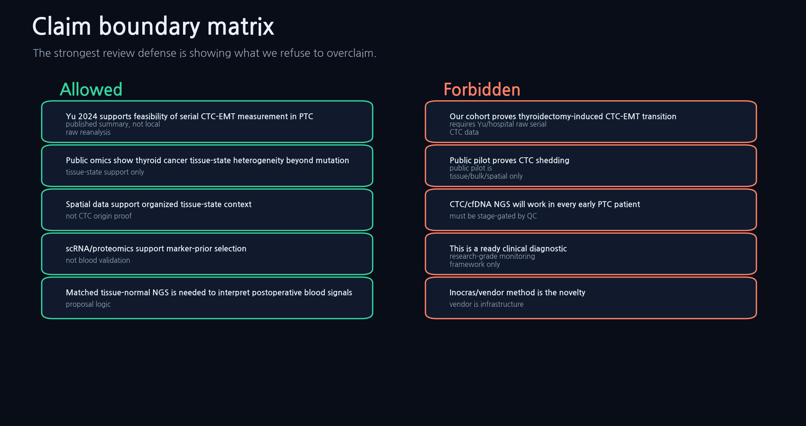
Data usedclaim boundary reports, Samsung reviewer defense table, no-Yu feasibility report.
How to read왼쪽은 논문/제안서에서 써도 되는 문장, 오른쪽은 쓰면 안 되는 문장이다.
Results scaffoldWe explicitly separated current evidence from future validation. Allowed claims include public tissue-state heterogeneity and published CTC feasibility; forbidden claims include new postoperative CTC transition, recurrence prediction, universal early-PTC NGS success, and clinical diagnostic readiness.
Methods / provenanceInput table: claim_boundary_matrix.tsv and claim_boundaries_and_kill_criteria.md.
Paper useReviewer response, internal decision memo, Discussion limitations.
Claim boundarydefensive slide가 아니라 scientific scope control로 제시해야 한다.
Reviewer-safe sentenceThe most credible version of this project is the version that states exactly what it cannot yet claim.
PF07
Reviewer attack map
{kind=link}
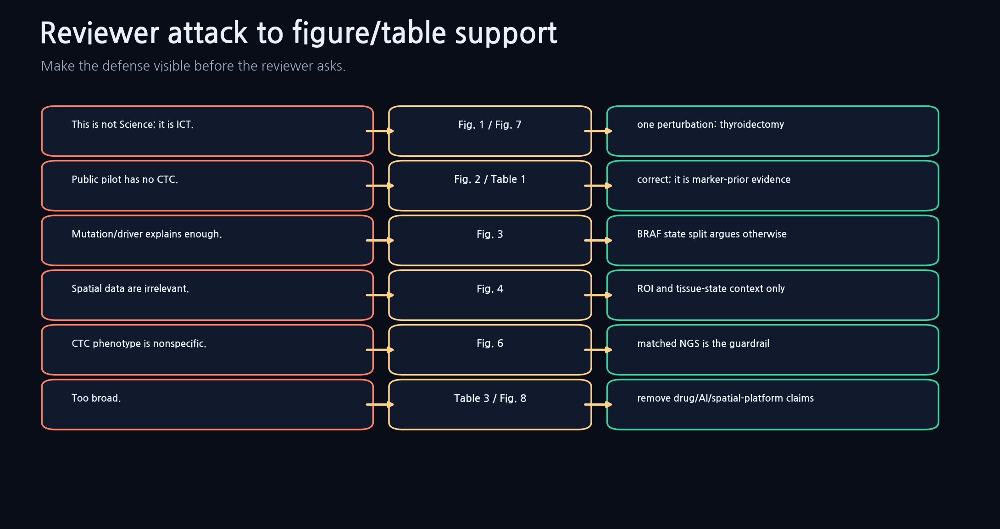
Data usedreviewer defense logic, claim boundary table, figure manifest.
How to read왼쪽은 공격, 가운데는 대응 그림/표, 오른쪽은 짧은 답변이다.
Results scaffoldWe pre-specified reviewer attacks and matched them to evidence. This table should be used to keep oral and written responses narrow, especially when reviewers challenge the absence of local serial CTC data.
Methods / provenanceInput sources: reviewer defense table, figure_table_manifest.tsv, claim_boundary_matrix.tsv.
Paper useSamsung 발표 Q&A, rebuttal 준비, professor briefing.
Claim boundary방어를 위해 새 claim을 만들지 않는다.
Reviewer-safe sentenceWhen attacked for lacking CTC data, answer directly: correct, and that is why public data are used only as prior evidence.
F09
Publishability decision
{kind=link}
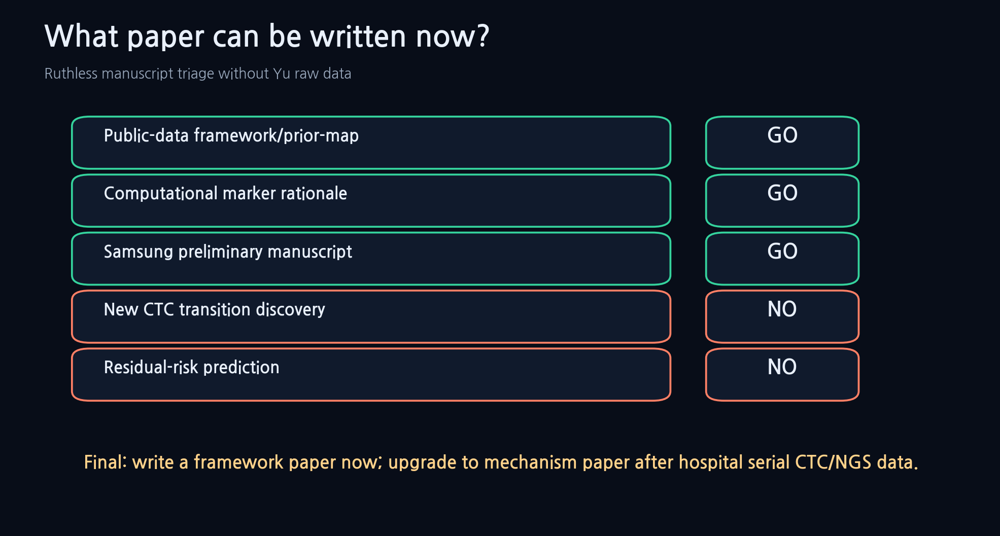
Data usedpublishability_decision_table.tsv; no-Yu feasibility report.
How to readYES_NOW는 framework/prior-map paper, NO_WITHOUT_YU는 transition discovery/residual-risk prediction paper다.
Results scaffoldThe immediate manuscript should be framed as a public-data prior-map paper. The higher-impact biological discovery manuscript becomes feasible only after the prospective serial dataset is generated or obtained.
Methods / provenanceInput table: publishability_decision_table.tsv.
Paper useInternal strategy, professor-facing decision memo.
Claim boundarystrategy figure이며 scientific result figure로 과장하지 않는다.
Reviewer-safe sentenceThe current manuscript is intentionally scoped as a prior-map paper; the discovery paper is the next data-dependent stage.
Samsung Deck Atlas
Large separated deck figures for transfer and review. These are not cramped into one contact sheet.
slide01_problem
Slide 1. The Narrow Problem
{kind=link}
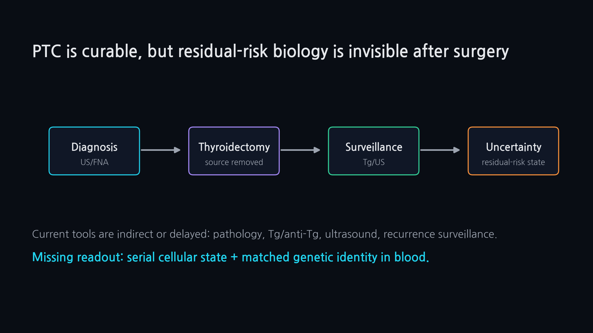
Data used
How to read
Results scaffold
Methods / provenance
Paper use
Claim boundary
Reviewer-safe sentence
slide02_hypothesis
Slide 2. Core Hypothesis
{kind=link}
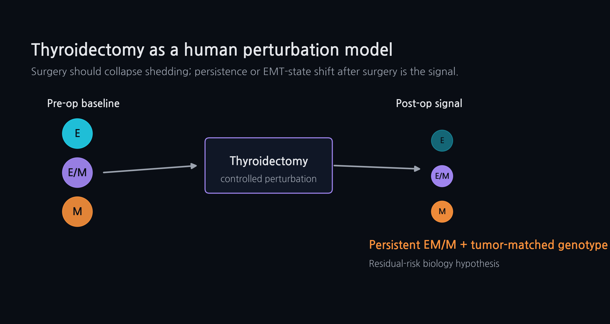
Data used
How to read
Results scaffold
Methods / provenance
Paper use
Claim boundary
Reviewer-safe sentence
slide03_literature_gap
Slide 3. Yu 2024 anchor and gap
{kind=link}
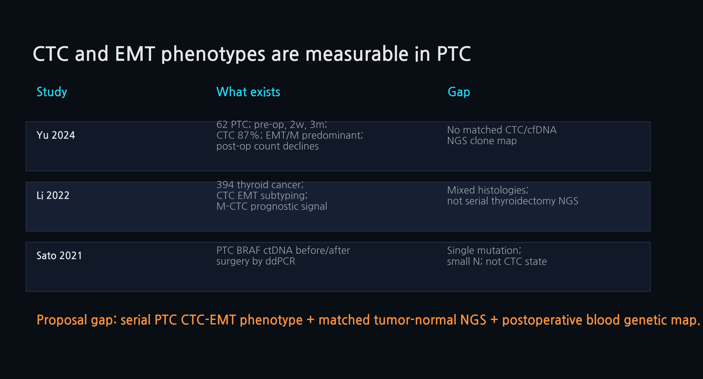
Data used
How to read
Results scaffold
Methods / provenance
Paper use
Claim boundary
Reviewer-safe sentence
slide04_missing_dataset
Slide 4. Missing serial dataset
{kind=link}
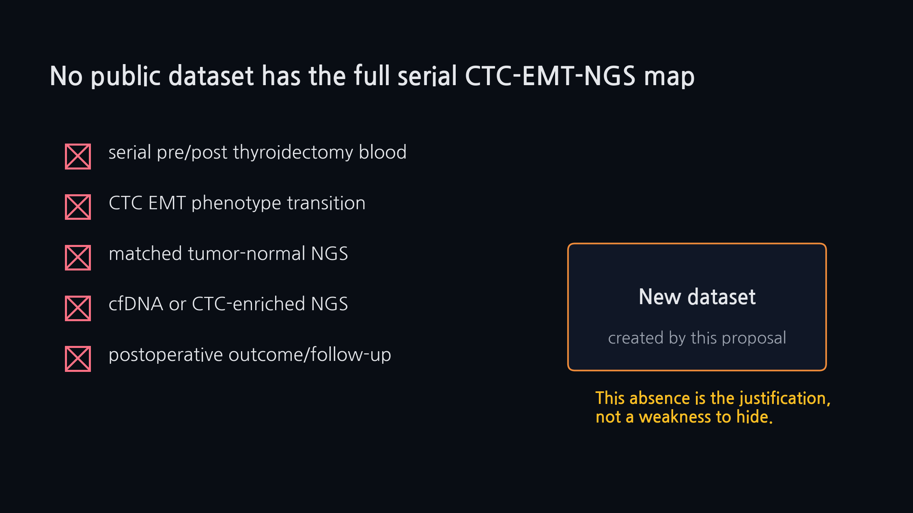
Data used
How to read
Results scaffold
Methods / provenance
Paper use
Claim boundary
Reviewer-safe sentence
slide05_driver_not_enough
Slide 5. Driver mutation is not enough
{kind=link}
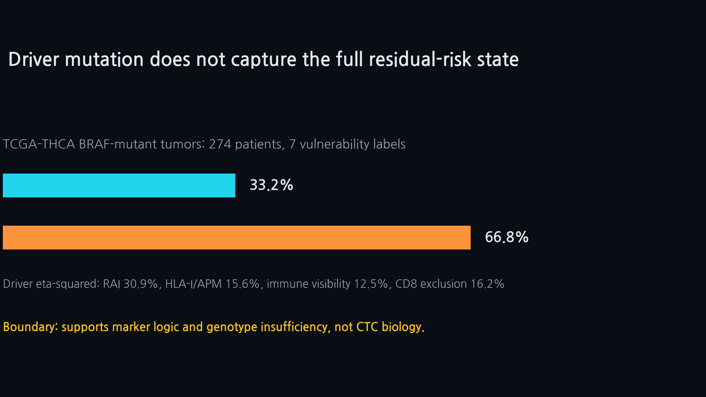
Data used
How to read
Results scaffold
Methods / provenance
Paper use
Claim boundary
Reviewer-safe sentence
slide06_spatial_context
Slide 6. Tissue context
{kind=link}
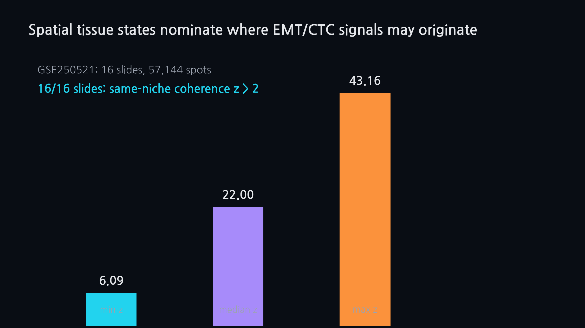
Data used
How to read
Results scaffold
Methods / provenance
Paper use
Claim boundary
Reviewer-safe sentence
slide07_ctc_ngs_panel
Slide 7. CTC-EMT-NGS panel
{kind=link}
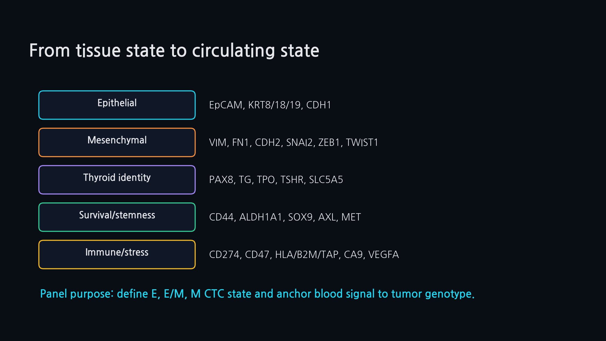
Data used
How to read
Results scaffold
Methods / provenance
Paper use
Claim boundary
Reviewer-safe sentence
slide08_sampling_timeline
Slide 8. Sampling timeline
{kind=link}
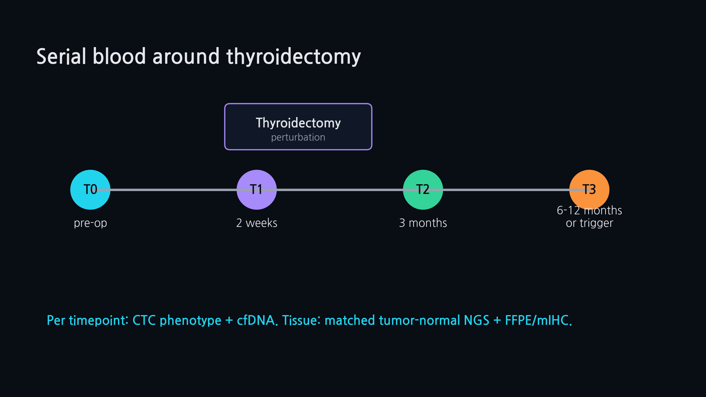
Data used
How to read
Results scaffold
Methods / provenance
Paper use
Claim boundary
Reviewer-safe sentence
slide09_genetic_map
Slide 9. NGS genetic map
{kind=link}
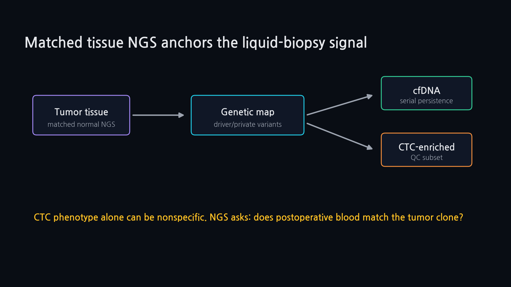
Data used
How to read
Results scaffold
Methods / provenance
Paper use
Claim boundary
Reviewer-safe sentence
slide10_claim_boundary
Slide 10. Claim boundaries
{kind=link}
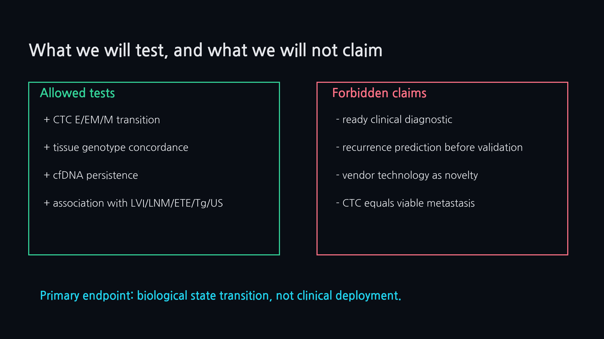
Data used
How to read
Results scaffold
Methods / provenance
Paper use
Claim boundary
Reviewer-safe sentence
slide11_budget_roadmap
Slide 11. Budget roadmap
{kind=link}
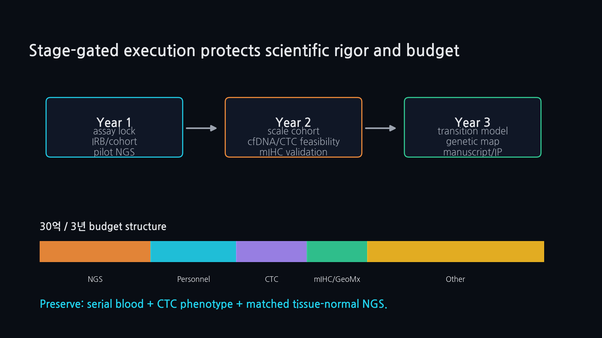
Data used
How to read
Results scaffold
Methods / provenance
Paper use
Claim boundary
Reviewer-safe sentence
slide12_final_ask
Slide 12. Final ask
{kind=link}
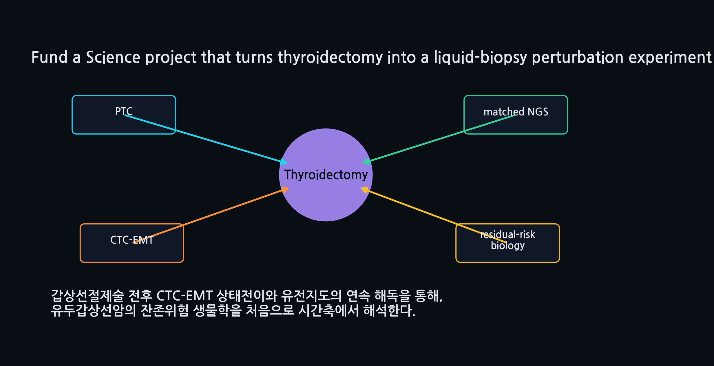
Data used
How to read
Results scaffold
Methods / provenance
Paper use
Claim boundary
Reviewer-safe sentence
Control Tables
The working tables that prevent numerical drift and overclaiming.
Key Number Ledger
| metric | value | unit | source_table | why_it_matters | boundary |
|---|---|---|---|---|---|
| TCGA BRAF-mutant subset | 274 | tumors | tcga_braf_only_label_distribution.tsv | BRAF-mutant tumors used for mutation/state split | tissue only; no CTC |
| BRAF tissue-state labels | 7 | labels | tcga_braf_only_label_distribution.tsv | BRAF tumors distribute across multiple states | label scheme is public-pilot derived |
| Largest BRAF state | 33.2 | % | tcga_braf_only_label_distribution.tsv | largest state is only about one-third | do not infer recurrence |
| BRAF ambiguity | 66.8 | % | tcga_braf_only_label_distribution.tsv | remaining BRAF cases are outside largest state | descriptive only |
| Spatial slides | 16 | slides | spatial_coherence_statistics.tsv | spatial coherence evaluated across slides | not CTC origin proof |
| Spatial spots | 57144 | spots | spatial_spot_vulnerability_scores.tsv | spot-scale tissue-state context | not cell-level pathology |
| Spatial z>2 slides | 16/16 | slides | spatial_coherence_statistics.tsv | same-niche coherence supports organization | not shedding evidence |
| scRNA module rows | 12 | rows | scrna_module_celltype_attribution.tsv | marker-context prior | not blood validation |
| Proteomics contrast rows | 40 | rows | bulk_proteomics_kthyro_module_contrasts.tsv | protein-direction support | bulk proxy only |
| Driver-only median R2 | 17.2 | % | tcga_axis_variance_models.tsv | driver-only model boundary | descriptive not causal |
Main/Supp Figure Layout
| paper_slot | content | asset | manuscript_position | takeaway |
|---|---|---|---|---|
| Main Fig 1 | Study logic and data provenance | PF01 + PF02 combined | Introduction/overview | public data as prior, Yu as feasibility, hospital as future test |
| Main Fig 2 | Mutation/state heterogeneity | F03 + F04 | Results 1 | BRAF/mutation alone is insufficient |
| Main Fig 3 | Spatial tissue-state organization | F05 + source spatial coherence | Results 2 | tissue state is organized, not random |
| Main Fig 4 | Marker context and module support | F06 + F07 + PF10 | Results 3-4 | marker panel is biologically motivated but not validated |
| Main Fig 5 | CTC-EMT-NGS interpretation framework | PF03 + F08 | Results 5 | phenotype must be clone-anchored |
| Main Fig 6 | Dataset gap and future unlock | PF04 + PF12 | Discussion | current paper stops before discovery claims |
| Main Fig 7 | Claim boundary and reviewer defense | PF05 + PF07 | Discussion/Reviewer defense | explicit allowed/forbidden claim boundary |
| Supplementary Fig S1 | CV2 visual atlas | PF08 | Supplement/meeting | all visual assets in one board |
| Supplementary Fig S2 | Publishability decision | F09 | Internal supplement | paper route decision |
| Supplementary Tables | All data dictionaries and manifests | TSV tables | Methods/Supplement | reproducible provenance |
Statistical Analysis Plan
| analysis_stage | question | input_data | planned_method | output | allowed_interpretation | boundary |
|---|---|---|---|---|---|---|
| Current in silico RQ1 | Does driver mutation collapse PTC into one state? | TCGA BRAF label distribution | fraction by state label; descriptive distribution | barplot + state split table | Mutation alone is insufficient | No CTC or outcome claim |
| Current in silico RQ2 | Are tissue-state labels spatially organized? | GSE250521 spatial scores | same-neighbor coherence z-score | coherence barplot | Tissue context supports marker/ROI logic | No CTC origin proof |
| Current in silico RQ3 | Which marker modules have public support? | TCGA/spatial/scRNA/proteomics/Yu anchor coding | 0/1/2 cross-layer support score | marker support heatmap | Prioritizes marker modules | Not assay validation |
| Current in silico RQ4 | What claims are currently writeable? | claim/evidence scorecard | evidence grade + support figure mapping | claim scorecard | Framework paper is feasible | No discovery claim |
| Future prospective RQ1 | Does thyroidectomy perturb CTC E/EM/M state? | serial CTC phenotype table | paired change; mixed-effects or paired nonparametric model | transition plot | Primary biological endpoint | Requires raw serial data |
| Future prospective RQ2 | Are persistent postoperative signals genetically anchored? | tumor-normal NGS + cfDNA/CTC NGS | variant concordance/VAF kinetics/QC pass | clone map | Genetic map of persistent signals | No universal success assumption |
| Future prospective RQ3 | Do EM/M persistent signals associate with risk features? | CTC/cfDNA + pathology + Tg/US/follow-up | association model; exploratory FDR control | risk association panel | Hypothesis-generating risk biology | No clinical prediction without validation |
Stage-Gate Kill Criteria
| gate | stage | pass_rule | kill_or_downgrade_rule | action_if_failed | status |
|---|---|---|---|---|---|
| G1 | Public-data manuscript | all source tables present and linked | missing or undocumented input | do not write unsupported Methods | currently pass |
| G2 | CTC assay reproducibility | repeatable CTC detection/subtyping | CTC detection/subtyping not reproducible | stop transition claim | future |
| G3 | Tissue-normal NGS | success rate >=85% | success <85% | clone-anchor claim weakened | future |
| G4 | cfDNA feasibility | usable signal in high-risk or CTC-high subset | unusable cfDNA even in enriched subset | cfDNA becomes exploratory/optional | future |
| G5 | CTC-enriched NGS | QC pass in CTC-high subset | low-input CTC NGS fails QC | do not claim CTC genotype map | future |
| G6 | Follow-up capture | >=80% key follow-up fields | follow-up capture <80% | no outcome/risk association | future |
| G7 | Claim discipline | all claims map to evidence table | unsupported clinical/prediction claim appears | remove sentence/figure | currently pass |
Hospital Data Request CRF
| data_block | fields | scope | why_needed | priority |
|---|---|---|---|---|
| patient_core | patient_id, age, sex, diagnosis date, surgery date | all patients | de-identified linkage key | required |
| tumor_pathology | tumor size, multifocality, LVI, LNM, ETE, margin, ATA risk | resected tumor | pathology report fields | required |
| blood_timepoints | T0 pre-op, T1 2 weeks, T2 3 months, T3 6-12 months/recurrence | serial blood | exact draw date and tube type | required |
| CTC_counts | total CTC, epithelial, hybrid, mesenchymal counts/fractions | each blood timepoint | assay method and QC flag | required |
| CTC_marker_qc | marker intensity, threshold, batch, image/cell QC if available | cell-level or sample-level | needed for reproducibility | high priority |
| tumor_normal_NGS | variant list, VAF, coverage, CNV/fusion, normal filter | tumor-normal pair | clone anchor | required |
| cfDNA_NGS | variant, VAF, depth, fragment/QC, timepoint | serial plasma | low signal expected | high priority |
| followup | Tg, anti-Tg, ultrasound, RAI, recurrence/persistence, last follow-up | post-op clinical follow-up | date-stamped | required for future association |
| sample_logistics | blood volume, processing time, storage, shipping, freeze-thaw | all biospecimens | failure-mode audit | required |
Reviewer Risk Heatmap
| reviewer_risk | severity_1_5 | mitigation | support | boundary |
|---|---|---|---|---|
| No raw CTC data | 5 | Frame current paper as public prior/framework | PF02, PF11, PF12 | Do not claim transition discovery |
| Public pilot not CTC biology | 5 | State explicitly that it supports marker/state priors only | PF05, PF07 | Strong boundary |
| Qualitative support scores look subjective | 4 | Label as planning scores and show source layers | PF10, marker support TSV | Not validation metrics |
| Spatial relevance challenged | 3 | Use only as tissue organization/ROI context | F05, spatial table | No CTC origin claim |
| Mutation-alone reviewer | 3 | Show BRAF state split and driver variance boundary | F03, F04 | Descriptive, not causal |
| Too broad / platform-like | 4 | Keep paper scoped to PTC, thyroidectomy, CTC-EMT, NGS anchor | PF11 | Remove drug/AI platform language |
| Clinical utility overreach | 5 | Use research-grade and future-validation language | PF05 | No diagnostic claim |
| Low-input CTC NGS feasibility | 4 | Stage-gate as CTC-high subset feasibility | PF12, CRF | No universal success claim |
Safe Sentence Bank
| claim_area | safe_sentence | forbidden_sentence |
|---|---|---|
| Mutation/state | BRAF-mutant PTC remains heterogeneous across public tissue-state labels. | BRAF status predicts postoperative CTC state. |
| Spatial | Spatial coherence supports organized tissue-state context for marker selection. | Spatial data prove the origin of CTC shedding. |
| scRNA | Single-cell marker context supports a biologically organized panel prior. | scRNA validates the circulating CTC phenotype. |
| Proteomics | Bulk proteomics proxy supports directional consistency of selected modules. | Proteomics proves CTC protein state. |
| Marker support | Cross-layer support differs by module and should guide prospective assay priorities. | Support score is assay validation. |
| NGS anchor | Phenotypic blood signals require matched genetic anchoring before residual-risk interpretation. | Marker-positive cells are residual disease. |
| Paper identity | The current manuscript is a public-data prior/framework paper. | The current manuscript discovers CTC-EMT transition. |
| Future data | Serial hospital CTC/cfDNA/tissue NGS data will be required to test transition and risk association. | Public data already support recurrence prediction. |
Scenario Decision Tree
| scenario | paper_route | what_to_do | boundary |
|---|---|---|---|
| If Yu raw data arrives | upgrade to serial CTC transition manuscript | add patient-level transition and clone map figures | still avoid clinical prediction until follow-up |
| If only aggregate Yu data arrives | keep current prior/framework paper | cite as feasibility anchor only | no reanalysis claim |
| If no hospital data before deadline | submit/prepare framework paper and Samsung appendix | use PF11/PF13 execution route | make limitations explicit |
| If CTC NGS fails | retain phenotype-transition biology only | downgrade genetic-map Aim to cfDNA/tissue anchor | do not hide failure |
| If follow-up is immature | publish biological transition/gap paper | defer recurrence/risk association | no prediction language |
Downloads
Direct links for handoff.